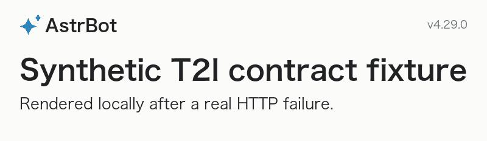

Before: contract checks passed? False
After: contract checks passed? True
| Observed case | Before | After |
|---|---|---|
| URL requested, valid callback base | filesystem_path | http_url |
| First / repeated file download | No URL returned | 200 / 200 |
| File download after controlled expiry | No URL returned | 404 |
| URL requested, no callback base | filesystem_path | actionable_error |
| Empty query / fragment delimiters | 0 / 6 rejected without tokens | 6 / 6 rejected without tokens |
| Explicit local-path request | JPEG · [800, 232] | JPEG · [800, 232] |
| Direct lower-level renderer | filesystem_path | filesystem_path |
| Successful remote rendering | HTTP 200 · extra tokens: 0 | HTTP 200 · extra tokens: 0 |
Rendering is unchanged; the defect is the returned location and whether a recipient can fetch it.

Before: de898afe7588e1f153beec06e24f03f6ddeae2e4
After: 1874e38925bbaacac84540860fe599533806bbb1
Measured before JSON · Measured after JSON. Local filesystem paths are redacted in the JSON summary; file bytes and status assertions are measured.